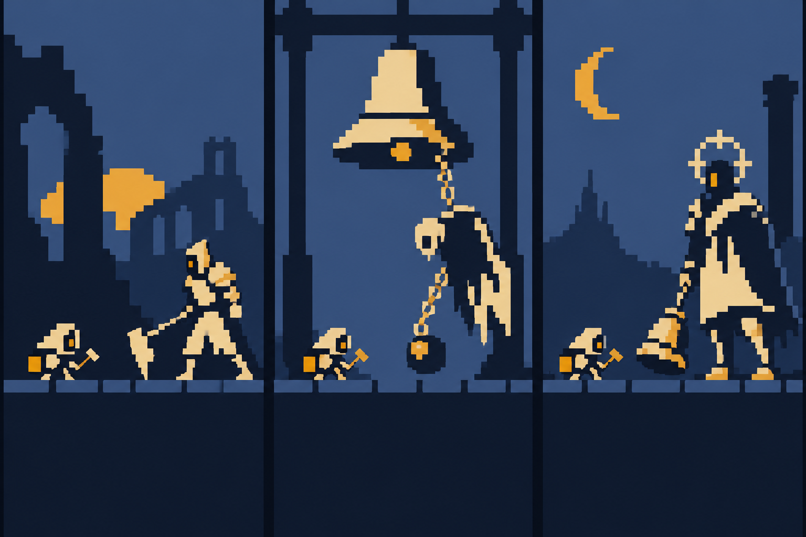
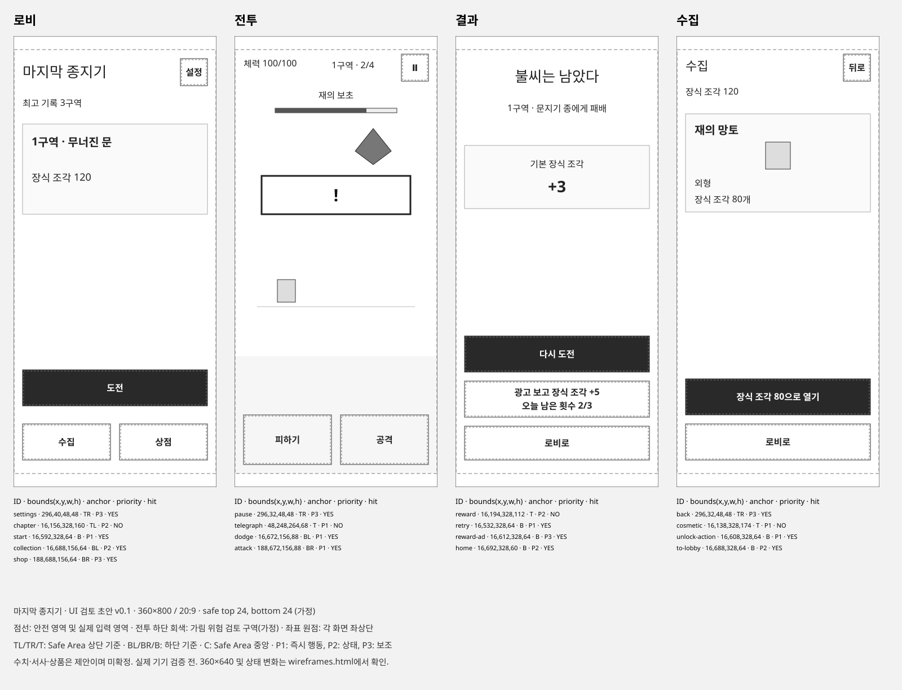

마지막 종지기 · 채택
한 장소·한 무기·한 결말로 제작 범위를 닫을 수 있다. 종의 울림과 반격 보상이 자연스럽게 연결된다.
위험: 어두운 배경의 예고 가독성. 기존 회피 게임과의 차이는 실제 조작에서 입증해야 한다.
GAME CONCEPT / 2026.10.20
피하고, 빈틈을 읽고, 종을 울린다.
두 버튼으로 새벽을 되찾는 도트 액션.
이번 산출물: 재사용 스킬 2개 + 기획·밸런스·화면·리소스·출시 전략. Unity 실행 빌드는 다음 제작 단계다.

시각 방향 시안 · 왼쪽부터 성문 / 사슬 회랑 / 종루. 생성형 콘셉트 이미지이며 실제 게임 캡처나 최종 스프라이트가 아니다. 제작 시 4색 기반 팔레트와 일관된 픽셀 격자로 다시 자산화한다.
밤이 끝나지 않는 마을. 마지막 불씨를 든 종지기가 잠든 세 개의 종을 깨운다. 회피에 성공해 얻은 울림을 반격으로 터뜨리고, 구역을 넘을 때마다 주변에 빛이 돌아온다. 전투의 성공과 이야기의 전진을 같은 장면으로 보여준다.
한 장소·한 무기·한 결말로 제작 범위를 닫을 수 있다. 종의 울림과 반격 보상이 자연스럽게 연결된다.
위험: 어두운 배경의 예고 가독성. 기존 회피 게임과의 차이는 실제 조작에서 입증해야 한다.
퇴근을 막는 귀신이라는 목표는 빠르게 전달된다. 다만 장소·상황극·대사의 반복 제작 부담이 커질 수 있다.
투기장은 반복 도전과 잘 맞는다. 부품 조립에 대한 기대를 충족하려면 애니메이션과 밸런스 범위가 넓어진다.
공식 소개는 검색 색인에서 확인했으며 직접 접속은 404였다. 현재 서비스 여부와 최신 판매 실적을 확인한 것이 아니다. 가제의 상표·스토어 중복 검토는 출시 명칭 결정 때 수행한다.
자유 이동·방향 선택·길게 누르기·세 번째 버튼을 제외한다. 공격 중에도 회피를 우선 처리하되 아직 적중하지 않은 공격은 취소한다. 회피 연타가 무적을 이어 붙이지 못하게 재사용 간격을 둔다.
정밀회피로 충전. 같은 패턴에서 중첩하지 않는다. 마지막 공격 뒤 반격 구간 안에 적중하면 강화 1타로 소비한다. 피격 시 지우고 그 패턴에서는 재충전할 수 없다. 시간 만료·전투 종료 시에도 제거한다.
일반 회피와 기본 공격만으로도 완주할 수 있게 한다. 정밀회피는 더 빠르고 멋지게 이기는 숙련 보상이다. 첫 승리 뒤에는 무피격·개인 최고 기록을 노린다. 실패 후 2초 이내 재조작을 목표로 하며 서사·상점·광고를 자동으로 끼우지 않는다.
반격 한 번은 장르에서 이미 쓰이는 구조다. 종과 배경만으로 차별화가 검증됐다고 보지 않는다. 두 버튼으로 다시 도전하고 싶은지부터 시험한다.
“밤이 끝나지 않았다.”
“새벽을 깨우던 종도
잠들었다.”
“남은 불씨 하나.
종을 깨워라.”
처음부터 건너뛰기를 제공하고 첫 실행 이후 자동 반복하지 않는다. 첫 전투에서 회피 한 번, 공격 한 번을 직접 성공시키게 한다. 엔딩은 “종이 울렸다.” → “마침내, 아침이 돌아왔다.”의 6초 장면으로 끝낸다. 첫 완주 때 기록을 확정한 뒤 한 번만 재생하며 건너뛸 수 있다. 이후에는 같은 밤을 다시 플레이하는 기록 도전이다.
오프닝·엔딩은 기존 배경과 종지기 자산을 재사용한다. 신규 고해상도 삽화 5장을 별도 제작하지 않는다. 설정에서 이야기를 다시 볼 수 있다.
전투 예고는 화면 중앙 위, 입력은 하단 엄지 영역에 둔다. 화면 안에는 실제 행동과 상태만 남긴다. 아래는 그림을 덧붙이기 전 정보 우선순위와 입력 영역을 정한 와이어프레임이다.

시작 · 피하기 · 공격 · 다시 도전 · 나가기 · 수집 · 구매 확인 중 · 구매 복원
필요한 경우에만 가격, 광고 보상, 남은 횟수, 실패 원인 한 줄을 추가한다. 실패 원인은 실제 판정 로그로 알 수 있을 때만 보여준다.
“두 버튼으로 전략적인 플레이를 즐기세요”, “영구 능력치 강화가 없는 게임입니다”, “이 화면은 서버와 연결됩니다” 같은 기획·구현 해설.
기획서의 설명은 게임 화면 밖에 둔다. 구매 조건과 복구 안내는 짧게라도 유지한다.
모든 시간과 수치는 플레이테스트 전 초기값이다. 정답을 숨기는 랜덤 공격 대신 예고가 읽히는 패턴 순서를 사용한다. 난도를 올릴 때 HP만 늘리지 않고 단타 → 연타 → 지연의 학습 순서를 유지한다.
HP 100 · 공격 10 · 반격 20
공격 간격 600ms / 선딜 120ms
회피 유효 220ms / 정밀 70ms
회피 재사용 700ms
마지막 타격 후 반격 적중 창 800ms
일반 공격은 패턴 도중에도 적중 가능. 울림 추가 피해만 마지막 타격 뒤 적용한다. 첫 시제품의 히트스톱은 0ms. 판정은 프레임 수가 아닌 동일 전투 시계의 입력 시각으로 계산한다.
기준 전투 약 187초 + 전환 29초
반복 런 약 216초 · 3분 36초
오프닝 9초·최초 학습 20~40초·엔딩 6초는 기록에서 제외. 첫 실행에 모두 보면 약 251~271초.
공격 효율 90% / 회피 92% / 정밀 35% / 반격 성공 90%라는 미검증 가정. 정밀회피 없이도 공격량상 약 234초. 실제 클리어율을 예측한 수치는 아니다.
| 적 · 구역 내 역할 | HP | 피해/타 | 예고 / 패턴 | TTK 근사 |
|---|---|---|---|---|
| 재의 보초 | 120 | 12 | 700ms / 기본 단타 | 8.1초 |
| 종 사냥개 | 150 | 12 | 600ms / 빠른 단타 | 10.2초 |
| 사슬지기 | 180 | 16 | 900→650ms / 기다리는 단타 | 12.2초 |
| 등불 기사 | 210 | 14 | 550→650ms / 촘촘한 단타 | 14.3초 |
| 문지기 종 · 보스 1 | 360 | 16 | 750→1,000ms / 두 준비 자세 | 24.4초 |
| 쌍추 종 · 보스 2 | 420 | 14 | 650 / 550ms · 2연타 | 29.4초 |
| 빈 종 · 보스 3 | 500 | 18 | 750 / 550 / 550ms · 3연타 | 35.8초 |
구역마다 일반 3전 → 보스 1전. 1·2구역 보스 뒤 HP +30(상한 100). 두 번째·세 번째 보스의 연타 간격은 1.05초로, 회피 쿨타임을 확보한다. 마지막 타격 뒤에는 800ms 반격 창을 가리는 다음 예고를 겹치지 않는다.
| 난도 | HP / 적 HP·피해 배율 | 회피·정밀 / 회피 재사용 | 회복 / 해금 |
|---|---|---|---|
| 쉬움 | 120 / ×0.9 · ×0.7 | 280·100ms / 650ms | +50 / 처음부터 |
| 기본 | 100 / ×1 · ×1 | 220·70ms / 700ms | +30 / 처음부터 |
| 도전 | 100 / ×1.1 · ×1.2 | 180·60ms / 700ms | +20 / 기본 완주 후 |
쉬움도 같은 외형 재화를 지급한다. 공격 준비 중 회피하면 아직 맞히지 않은 공격만 취소하고 공격 쿨타임은 유지한다. 한 입력으로 여러 회피를 예약하거나 무적을 연장하지 않는다. 공격 입력 피로가 크면 간격 750ms·피해 12.5안을 따로 재계산한다.
제작 기준은 주인공 16×24px, 일반 적 24~32px, 보스 48~64px 크기의 원본 스프라이트를 출발점으로 잡는다. 4색 기반 팔레트, Point filtering, 정수 배율을 우선한다. UI의 한글은 픽셀 분위기보다 가독성을 우선한다.
| 리소스 | 재미 프로토타입 | 원스토어 출시 목표 | 제작·검증 기준 |
|---|---|---|---|
| 주인공 | 1종 · 임시 외형 | 종지기 1종 / 망치 1종 | 대기2 / 공격3 / 회피2 / 피격1 / 패배2. 반격은 공격 재사용 |
| 적 | 일반 1 + 보스 1 | 일반 4 + 보스 3 | 공격 예고의 자세·실루엣 우선. 후속 수치표의 이름과 ID 사용 |
| 배경 | 전투 무대 1 | 공통 타일 + 구역 3 변형 | 성문 / 사슬 회랑 / 종루. 장식은 전조보다 어둡게 |
| 전투 효과 | 회피·피격·반격 | 5종 × 3프레임 = 15프레임 | 피격·일반회피·정밀회피를 형태와 소리로 구별 |
| 화면 | 전투·결과·설정 | 로비·전투·결과·수집·상점·설정 | 공용 버튼·모달. 저장 프리팹으로 제작 |
| 서사 | 3컷 도입 | 도입 3 / 엔딩 2 | 배경·캐릭터 재사용, 별도 삽화 제작 제외 |
| 음향 | 필수 피드백 5~6 | BGM 2 + 징글 2 / SFX 12~16 | 음소거 상태에서도 모든 예고가 보일 것 |
| 외형 | 기본 외형 | 기본 1 / 무료 해금 2 / 유료 2 | 총 5팔레트·썸네일, 능력치·예고 효과 변경 없음 |
프레임 수·작업량과 세부 자산 목록 · 이미지 생성 도구·전체 프롬프트·선정 기록
축소 애니메이션 예산: 주인공 10 + 일반 4×9 + 보스 3×13 = 85프레임. 초기 181프레임 견적을 대체한다. 반격 전용 동작은 기본 공격과 VFX를 재사용한다. 프레임 수를 줄여도 예고 지속시간과 판정 시각은 바꾸지 않는다.
자산 21~38인일 + 구현·검증 19~33인일, 여유 20%를 포함한 전체 48~85인일의 보수적 작업 가정이다. 1인일은 집중 작업 6시간. 원스토어 SDK·정책·심사 대응은 별도이며 실제 견적이나 납기 약속이 아니다. 작은 도트라도 예고·UI·음향·기기 검토 비용은 남는다.
3주는 판매 가능한 완성 게임의 납기가 아니다. 프로토타입 90~120시간을 가정한다. 초기의 전체 7~9주 가정은 자산 견적과 맞지 않아 폐기했다. 최종 후보 전체의 48~85인일은 주 5일 기준 약 10~17주 작업량이며, 플랫폼·심사와 외부 테스트 대기는 별도다. 실제 가용 시간과 예산을 확인한 뒤 일정화하며, 재미 시험에 실패하면 이 제작비를 쓰지 않는다.
| 검증 | 진행 참고선 | 보류·수정 조건 |
|---|---|---|
| 8명 관찰 | 설명 없이 실패 원인을 이해하고 자발적으로 다시 도전 | 3명 이상이 3회차에도 피격 이유를 오해하면 예고·입력부터 수정 |
| 30~50명 테스트 | 조작 이해 80%, 첫 실패 후 자발적 재도전 60% 목표 | 두 차례 개선 후에도 재도전 40% 미만이면 콘텐츠·과금 확대 중단 |
| 재방문 | D1 30% / D7 10%를 내부 참고선으로 설정 | D7 관찰 완료 100명 이상에서 D1<20% 또는 D7<5%면 확대 보류 |
| 수익화 | 실제 결제·환불·노출·운영비를 기록 | 자연 유입과 잔존 근거 없이 유료 UA 확대 금지 |
모두 내부 의사결정 기준이며 업계 평균이 아니다. D1/D7은 첫 전투를 시작한 날짜 기준 정확히 1일/7일 후 다시 전투를 시작한 비율. 소표본 수치는 인원과 함께 보고한다.
Sensor Tower의 2026년 상반기 자료에서는 글로벌 모바일 다운로드가 전년 대비 줄고 하이브리드 캐주얼 IAP가 늘었다. 짧은 플레이와 선택 광고·구매의 조합을 시험할 배경은 있지만, 원스토어에서 이 도트 액션의 수요가 검증된 자료는 확보하지 못했다. 원스토어 선출시는 유통 선택이며 성공의 근거가 아니다. 시장 원출처 · 2026.07
자동전투보다 직접 조작을 선호하고, 긴 성장 노동 없이 짧은 시간에 보스 패턴을 익히고 싶은 한국 Android 이용자.
10초 영상: 한 번 피격 → 같은 패턴 회피 → 종 반격 성공. 허용된 커뮤니티 소개와 자체 모집으로 시작하고 실제 설치 경로별로 측정한다. 피처드는 확보된 유입으로 계산하지 않는다.
1캐릭터·짧은 완주·성능 과금 없음은 상품 폭을 좁힌다. 작은 도트에서는 외형 구매 가치가 약할 수 있다. 반복적인 새 콘텐츠 공급이 노동비보다 큰 수익을 낼지도 확인해야 한다.
판매자·정산정보 → package name·서명 → 콘텐츠 등급 설문 → 원스토어 IAP·광고 연동 → 구매/복원/환불·실기기 검증 → 등록 정보·정책 문서 → 검수 → 배포 순서로 준비한다. 계정·등급·SDK 호환성·심사 일정은 미확인이다.
베타게임존은 무료 검증 경로이며 결제 테스트를 할 수 없다. 이용 시 베타와 정식 package name/AID 구분도 필요하다. 선정 여부가 불확실하므로 자체 모집을 기본 경로로 잡는다. 공식 베타·인디게임존 안내
| 항목 | 기획 기준 | 플레이에 미치는 영향 |
|---|---|---|
| 무료 플레이 | 모든 MVP 전투·재도전 | 스태미나·유료 부활·강제 광고 없음 |
| 선택 광고 | 결과에서 장식 조각 +5 / 하루 최대 3회 | 기본 보상과 즉시 재도전은 유지. 전투력과 무관 |
| 외형 A | 3,300원 가정 / 영구 외형 1종 | 상품별 1회. 능력치·판정·보스 해금 변화 없음 |
| 후원 꾸러미 B | 5,500원 가정 / 별도 외형 + 감사 배지 | A와 중복 없음. 구독 아님. 구매 확인·복원 제공 |
홍보 문구는 “강제 광고 없음 · 보상 광고는 선택”. 원래 없는 강제광고를 제거하는 상품은 팔지 않는다. 두 상품을 모두 산 이용자의 구매 상한은 현재 8,800원이다. 같은 이용자가 매달 반복 지출한다고 계산하지 않는다.
광고 없이 10번 완주하면 두 무료 외형을 모두 모은다. 계산상 약 36분의 성공 플레이로 소진되므로 6일 활동·지속 광고 노출 가정이 낙관적일 수 있다. 수집 속도를 억지로 늦추기보다 작은 완결형 게임과 기록 도전의 재방문 가치를 검증한다. 하루 2회 완주에서 보상 광고를 결과당 1회 보면 48+10=58이며, 일 최대 +15에는 세 번째 결과가 필요하다.
| 첫 30일 · 전부 가정 | 낮음 | 기준 | 높음 |
|---|---|---|---|
| 획득 설치 / MAU | 625 / 500 | 2,500 / 2,000 | 10,000 / 8,000 |
| 1인 활동일 / 평균 DAU | 3일 / 50 | 6일 / 400 | 9일 / 2,400 |
| 결제율 / ARPPU | 0.5% / 3,300원 | 1.5% / 4,400원 | 3% / 5,500원 |
| 결제액 기준 환불률 | 3% | 2% | 1% |
| 실노출 / 활성 이용자일 | 0.2회 | 0.5회 | 1회 |
| 퍼블리셔 eCPM · 원화 | 4,000원 | 6,000원 | 8,000원 |
| IAP 총결제액 · VAT 포함 | 8,250원 | 132,000원 | 1,320,000원 |
| VAT·환불·20% 수수료 반영 IAP | 5,820원 | 94,080원 | 950,400원 |
| 광고 수익 | 1,200원 | 36,000원 | 576,000원 |
| 공제 반영 수익 합계 | 7,020원 | 130,080원 | 1,526,400원 |
| 10% 감면 적용 시 합계 | 7,748원 | 141,840원 | 1,645,200원 |
| 운영 현금비 가정 | 50,000원 | 100,000원 | 200,000원 |
| 20% 기준 운영 잔액 · UA 0 | −42,980원 | 30,080원 | 1,326,400원 |
이 표는 예측이나 보장 수익이 아니다. 확보된 유입은 아직 0이며, 높은 시나리오도 성공 확률을 뜻하지 않는다. 노동비·초기 아트비·장비비·소득세는 잔액에서 제외했다. 월 노동 80시간×2만원을 추가하면 높은 시나리오도 약 27만원 적자다.
첫 달 기존 구매자 0명 가정. 계산기는 환불률 2% 고정이라 환불률이 다른 표의 낮음·높음 시나리오를 완전히 재현하지 않는다. DAU=MAU×활동일÷30. IAP=MAU×결제율×ARPPU×0.98÷1.1×(1−수수료). 광고=DAU×30×실노출×eCPM÷1000.
광고 eCPM은 광고망 공제 후·VAT 제외 원화 가정이다. 광고에는 IAP 수수료를 다시 적용하지 않는다. 실제 광고 노출을 쓰므로 fill rate도 중복으로 곱하지 않는다. 원스토어 기본 20%, 조건부 감면은 월 합산 거래액 5,000 USD 이하 등 공식 조건과 계정 적용을 확인해야 한다. 쿠폰 등의 할인 정산은 위 단순 계산에서 제외했다. 공식 수수료 안내
수집 완료 뒤 광고 참여가 줄어드는 민감도도 확인한다. 기준 가정에서 광고 수익만 0으로 낮추면 합계 94,080원, 운영 현금비 차감 후 −5,920원이다. 노동비·UA비는 여전히 제외다. 수집 완료 전·후의 활동일과 광고 실노출을 분리해 측정해야 한다.
폴더 책임, Excel→검증→생성 데이터, 수동 에셋 카탈로그, 저장 프리팹, 세션/Presenter/View, 비동기 보상과 저장, 필요한 규모의 자료구조를 정의했다.
스킬 원본 보기화면 목표→와이어프레임→검토→배치→렌더 확인. 필요한 행동·상태·서사·구매 조건만 남기고 개발 설명은 게임 화면에서 제거한다.
스킬 원본 보기GameData 원본 → Editor 전체 검증 → Generated SO/JSON
수동 Prefab/Sprite/Audio Catalog ────────────┘
↓
GameSession
↙ ↘
CombatState / Pattern Save / Platform Adapter
↕
Presenter → 저장된 UI Prefab
이번 게임은 한 번에 적 1명이다. 패턴은 배열, ID 조회는 Dictionary, 보상 중복은 처리 ID로 관리한다. 공간 해시·ECS·DI 컨테이너·PvP 서버를 선행 도입하지 않는다. 공격·회피 시간은 전투 시계 한 곳에서 판단하고 UI는 그 상태를 표시한다.
두 스킬은 C:\Users\JW\.codex\skills에 설치했다. 공식 형식 검증 2개 통과, 수동 프리팹 유지·Unity 미실행 조건의 독립 사용 시나리오 검토를 반영했다. 스킬 검토 · Permission-to-win 근거 · SimpleGame 근거
네 담당 모두 현재 기획 기준선에 동의했고 필수 문서 수정은 해소했다. 기획 12절·전투 12절·UI 11절·시장 10절이 각 문서의 최종 판정이다. 이전 제안은 변경 이유를 남긴 기록이며 현재 기준은 통합 결정 기록을 따른다. 기획 기준선 확정과 재미 검증은 별개다. 주제·반격 규칙은 실제 시험에서 실패하면 바꾸며, 낮은 매출 가정에 맞춰 제작비 확대를 제한한다.
총괄의 최종 브라우저 검증: 기획서 360/768/1440px, 와이어프레임 뷰어 360/768/1440/1600px에서 가로 넘침 없음. 주요 4화면 캡처 시각 확인, 이미지 누락·스크립트 오류 없음, 매출 입력 변경 확인. 모든 상태의 실제 기기 검증을 의미하지 않는다. 렌더 검사 · 수치·파일 검산